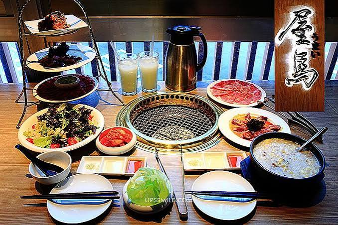
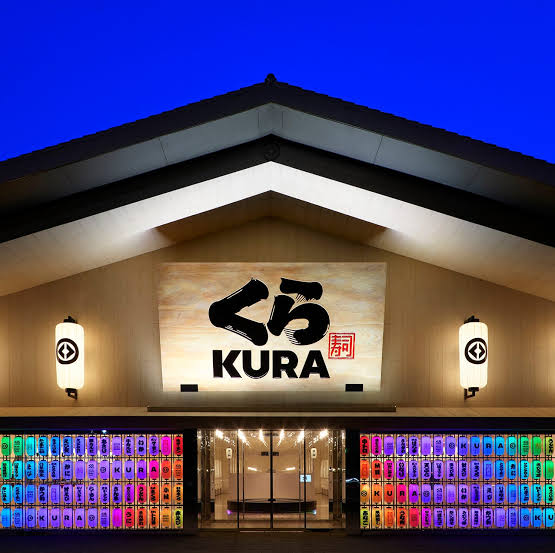
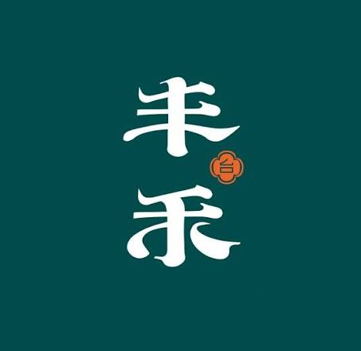

🏠 回總部大廳
🕒 --:--
🔊 音效開
🎰 台中市北屯區・百大美食拉霸機
5 大精選分類 × 每類限量 20 席 × 嚴選 500 道招牌菜

屋馬燒肉 崇德
訂位贈私房菜

藏壽司 崇德
滿額抽限定扭蛋
招租 3
北屯創始席位
點擊洽談合作
招租 4
北屯美食席位
高精準在地導流
招租 5
商圈特約席位
歡迎名店進駐
🎲 1. 美食隨機抽（全區 100 家總池）
🥢 2. 人氣小吃（限量 20 家）
🇹🇼 3. 台味合菜（限量 20 家）
🍲 4. 鍋物燒烤（限量 20 家）
🌍 5. 異國美饌（限量 20 家）
☕ 6. 咖啡午茶（限量 20 家）
🟢 僅抽目前營業中
統計中...
第一軸・菜色
🍽️
準備開轉
第二軸・店家
🏪
北屯好店
第三軸・狀態
⏰
即時對時
北屯美食，開轉！

丰禾台味 崇德
王品台菜名店
VIP 7
JAI宅 水湳店
爆炸蛤蜊義大利麵
招租 8
北屯創始席位
一鍵導航吸客
招租 9
限量廣告席位
全區限量 10 席
招租 10
特約合作席位
了解合作方案